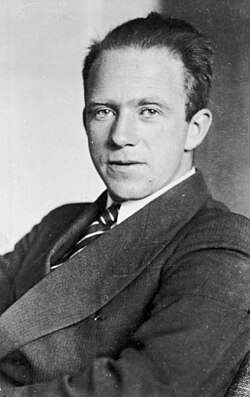

Quem foi?
Werner Karl Heisenberg (1901 – 1976) foi um físico teórico alemão e um dos pais fundadores da Mecânica Quântica. Ele revolucionou a forma como entendemos a realidade no nível subatômico, recebendo o Prêmio Nobel de Física em 1932 por suas criações e descobertas fundamentais.
O Princípio da Incerteza
Sua contribuição mais famosa é o Princípio da Incerteza (1927). Ele estabelece um limite fundamental da física: não podemos medir simultaneamente, com precisão absoluta, certas propriedades de uma partícula, como sua posição e seu momento linear (velocidade multiplicada pela massa).
Em termos simples: quanto mais tentamos fixar o local exato de uma partícula (Δx), menos sabemos sobre a rapidez e a direção para onde ela está indo (Δp).
Grandes Feitos
- Mecânica Matricial (1925): A primeira formulação matemática completa e lógica da mecânica quântica.
- Prêmio Nobel de Física: Conquistado com apenas 31 anos de idade.
- Estrutura Atômica: Propôs o modelo de que o núcleo atômico é composto especificamente por prótons e nêutrons.
🐚 Heisenberg na cultura pop
O nome Heisenberg transcendeu a física e tornou-se um ícone cultural. Na série Breaking Bad, o personagem Walter White adota o pseudônimo “Heisenberg” — uma referência direta ao físico, associando a genialidade e o lado sombrio da ciência.